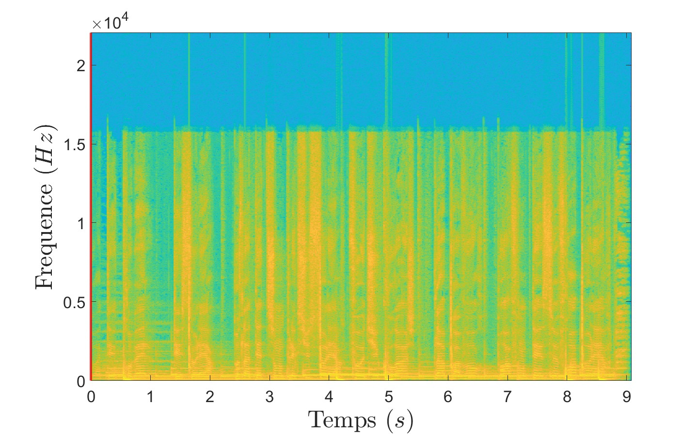
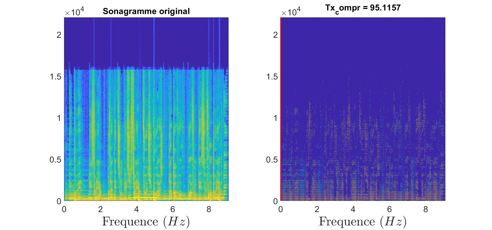
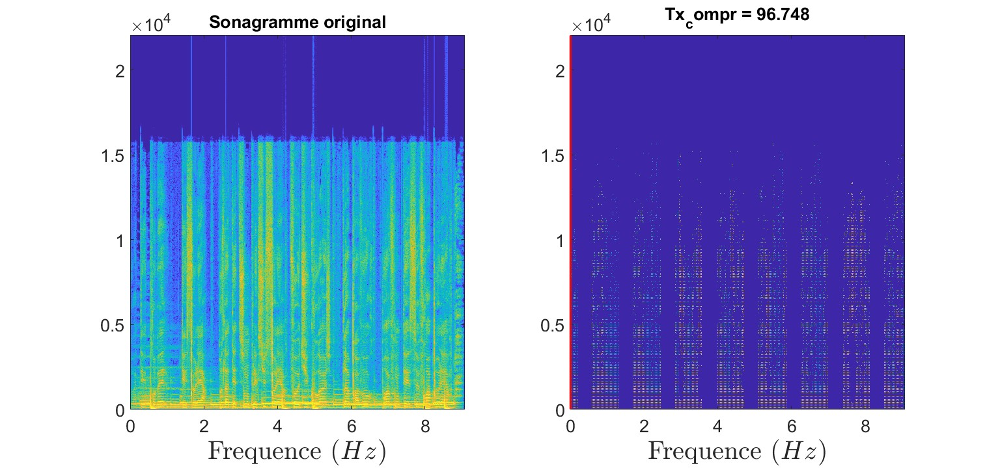
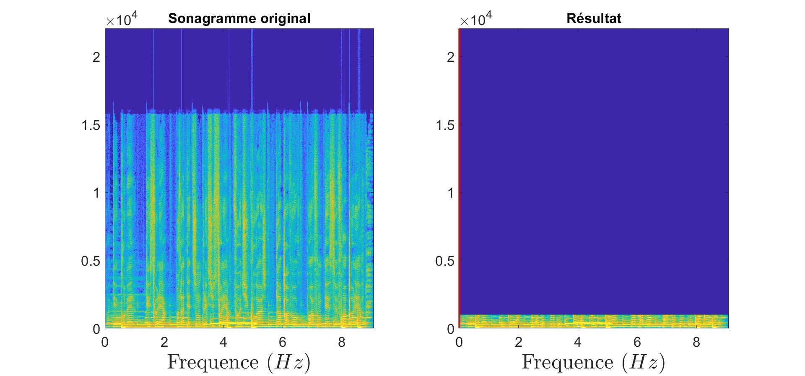
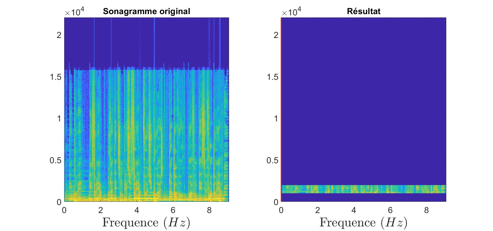
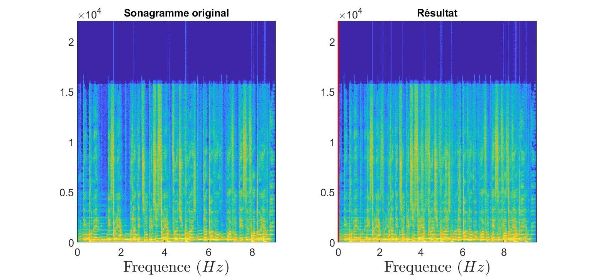
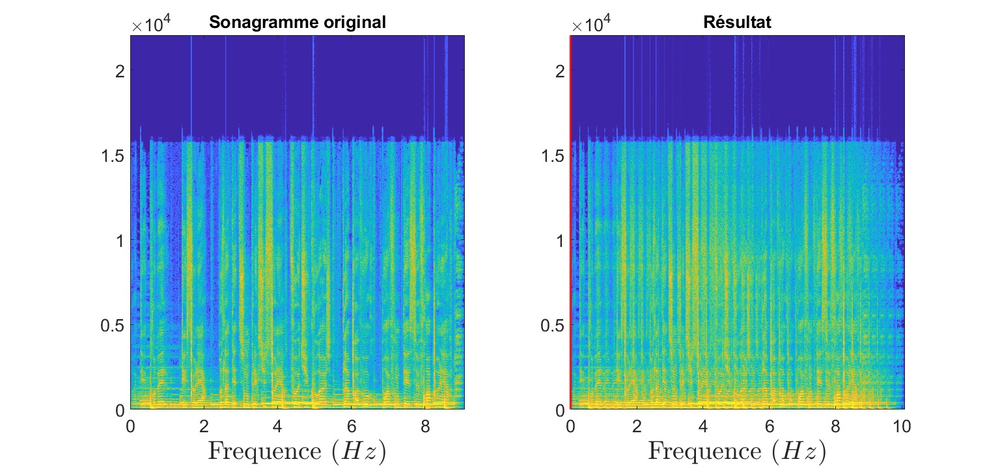
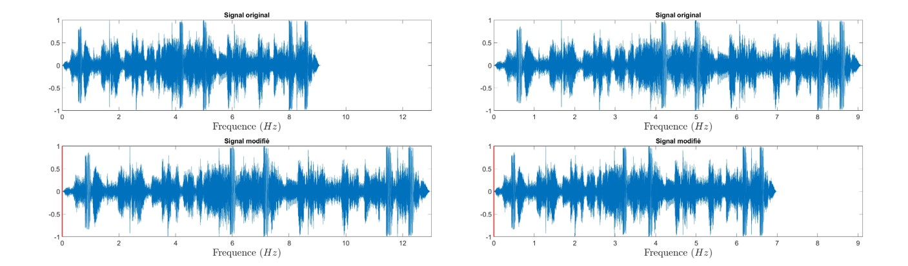

Projet de Traitement des données Audio-Visuelles
TP10 - Manipulation de signaux audionumériques
Dans cette partie, nous nous proposons de travailler sur le traitement de données audio ! En effet, ce domaine du traitement de données présente de nombreuses applications intéressantes, que je vais tenter de vous présenter ici.
Dans un premier temps, nous verrons comment travailler sur le son, puis comment le compresser et enfin comment lui appliquer des transformations.
TFCT et ITFCT
Pour travailler de manière efficace et pertinente sur le son, nous utiliserons le merveilleux outil qu’est le sonagramme ! Le sonagramme affiche l'évolution du spectre d’un signal au cours du temps, offrant ainsi une représentation en trois dimensions : le temps, la fréquence et l’amplitude.
Pour le construire, nous avons besoin de passer dans le domaine fréquentiel et ce à court terme, c’est-à-dire sur une plage définie. On peut également choisir la pondération entre les plages pour adoucir le rendu (Rectangulaire ou Hann). Voilà mon implémentation de la TFCT :
function Y = TFCT(y, N, D, fenetre)
Y = buffer(y, N, N-D, 'nodelay');
fenetre = strcmp(fenetre, 'hann') * hann(N) + strcmp(fenetre, 'rect') * ones(N, 1);
% Calculer de la TFCT
Y = fft(Y .* fenetre(:));
Y = Y(1:floor(N/2) + 1, :);
end
Pour tester notre fonction, nous allons utiliser un extrait de la musique Polaire de Gen:
Voici le sonagramme obtenu avec la fonction TFCT :
Nous devons maintenant implémenter le chemin inverse pour reconstruire le signal d’origine. Voilà mon implémentation de la ITFCT (légère modification) :
function y = ITFCT(Y, N, D, fenetre)
Y(end+1:N, :) = 0;
w = strcmp(fenetre, 'hann') * hann(N) + strcmp(fenetre, 'rect') * ones(N, 1);
n = (size(Y, 2) - 1) * D + N;
y = zeros(n, 1);
w_sum = zeros(n, 1);
for t = 1:size(Y, 2)
idx = (1:N) + (t - 1) * D;
y(idx) = y(idx) + ifft(Y(:, t), 'symmetric') .* w;
w_sum(idx) = w_sum(idx) + w.^2;
end
y(w_sum ~= 0) = y(w_sum ~= 0) ./ w_sum(w_sum ~= 0);
y = y(D:end-D);
end
On peut vérifier que le signal reconstruit est bien le même que le signal d’origine :
Compression
La compression vise à conserver uniquement une faible proportion des coefficients de Fourier (les plus élevés). Une première implémentation naïve vise à garder uniquement les k coefficients les plus importants par colonne du sonagramme :
function [Y_modifie, taux_compression] = compression(Y, k)
% Conserver les k valeurs les plus hautes
Y_modifie = zeros(size(Y));
for col = 1:size(Y, 2)
[~, indices] = maxk(Y(:, col), k);
Y_modifie(indices, col) = Y(indices, col);
end
% Calcul du taux de compression
taux_compression = (1 - nnz(Y_modifie) / numel(Y)) * 100;
end
On peut alors tester notre fonction de compression sur le sonagramme de Polaire :

Avec cette première implémentation (figure 31), on obtient tout de même 90% de compression. Pour améliorer ce résultat, on peut faire de la décimation, c’est-à-dire retirer des lignes et des colonnes dans le sonagramme avant de garder les coefficients les plus importants :
function [Y_modifie, taux_compression] = compression_decimation(Y, m, df)
% Décimer le sonagramme Y
Y_decimated = Y(1:df:end, 1:df:end);
Y_modifie_decimated = zeros(size(Y_decimated));
for col = 1:size(Y_decimated, 2)
[~, indices] = maxk(Y_decimated(:, col), m);
Y_modifie_decimated(indices, col) = Y_decimated(indices, col);
end
% Reconstituer le sonagramme avec des zéros aux positions supprimées
Y_modifie = zeros(size(Y));
Y_modifie(1:df:end, 1:df:end) = Y_modifie_decimated * df;
% Calculer le taux de compression
taux_compression = (1 - nnz(Y_modifie) / numel(Y)) * 100;
end
Le facteur df (décimation factor) correspond à l’intervalle entre chaque ligne ou colonne que l’on garde. Ici on a df = 2, donc il reste 1 ligne sur 2 et une colonne sur 2 :
On obtient 95% de compression ! Pour df = 3, le signal devient trop détérioré et la voix robotique :
Transformations
Enfin, on peut appliquer des transformations sur le sonagramme pour obtenir des effets intéressants. Voila une liste de transformations que j’ai implémentées.
Filtres passe bas
Filtres passe haut

Filtres passe bande
Echo simple
Echo multiple
Voilà le code de la fonction de réverbération (params est une matrice de deux colonnes, la première contenant les délais et la deuxième les taux de réverbération) :
function [Y_modifie, valeurs_t_modifie] = reverbe(Y, valeurs_t, params)
% Calculer le nombre de colonnes du décalement maximum
delay_max = sum(valeurs_t < max(params(:, 1)));
nb_freq = size(Y, 1);
nb_temps = size(Y, 2);
Y_modifie = [Y, zeros(nb_freq, delay_max)];
% Appliquer chaque réverbération
for idx = 1:size(params, 1)
delay = sum(valeurs_t < params(idx, 1));
taux = params(idx, 2);
Y_modifie(:, delay + 1:nb_temps + delay) = Y_modifie(:, delay + 1:nb_temps + delay) + taux * Y;
end
% Calculer les valeurs de temps en plus
valeurs_t_modifie = [valeurs_t, valeurs_t(end) + (1:delay_max) * valeurs_t(2)];
end
Modifier la vitesse de lecture
Afin d’étirer temporellement un signal audio, une première idée consiste à changer la vitesse de lecture, ou, de façon équivalente, à faire comme si le signal avait été échantillonné à une fréquence plus élevée que sa véritable fréquence d’échantillonnage :

Cependant, cette méthode altère également le contenu fréquentiel du signal. Pour résoudre ce problème, un algorithme d’étirement temporel traite le module du sonagramme du signal comme une image, que l’on peut facilement étirer horizontalement par simple interpolation linéaire. Le problème réside plutôt dans la manipulation de la phase.
Cet algorithme propose d’utiliser, comme différence de phase entre deux colonnes du sonagramme interpolé, la différence de phase entre les deux colonnes du sonagramme d’origine ayant servi à l’interpolation :
function y_modifie = etirement_temporel(y, taux)
N = 2048;
D = 512;
Y = TFCT(y, N, D, 'hann');
C = 1:taux:size(Y,2);
y_modifie = zeros(size(Y,1),length(C));
ang = angle(Y(:,1));
% Reconstruction du signal
for i = 1:length(C)-1
c = floor(C(i));
alpha = C(i) - c;
rho = (1-alpha)*abs(Y(:,c)) + alpha*abs(Y(:,c+1));
y_modifie(:,i) = rho .* exp(1j * ang);
ang = ang + angle(Y(:,c+1)) - angle(Y(:,c));
end
y_modifie = ITFCT(y_modifie, N, D, 'hann');
end
De cette manière, la modification de vitesse ne change pas la tonalité de la voix :